Next: แบบจำลองความปลอดภัย
Up: แบบจำลองมาร์คอฟ
Previous: แบบจำลองมาร์คอฟของระบบ TMR
Contents
Index
แบบจำลองมาร์คอฟที่คำนึงถึงผลกระทบจากความคุ้มครองจากความเสียหาย
จากการใช้แบบจำลองมาร์คอฟในการค่าความน่าเชื่อถือของระบบ TMR ที่ผ่านมาเราไม่ได้คำนึงถึง ความคุ้มครองจากความเสียหาย และความสามารถในการซ่อมอุปกรณ์ ในบทนี้เราจะกล่าวถึงวิธีการจำลองระบบที่คำนึงถึงผลกระทบจากเฟคเตอร์ความคุ้มครองจากความเสียหาย โดยใช้แบบจำลองมาร์คอฟ และแบบจำลองมาร์คอฟของระบบที่มีการซ่อมบำรุง
ระบบที่จะพิจารณาต่อไปเป็นระบบที่คงทนต่อความเสียหาย ประกอบด้วยโมดูลสามโมดูลทำงานพร้อมกัน ระบบสามารถตรวจสอบสภาพการทำงานได้ว่า โมดูลทำงานปกติหรือมีความเสียหาย เอาท์พุทจากโมดูลเข้าไปยังอุปกรณ์รวมผลฟลักซ์ (Flux Summer) ซึ่งเป็นอุปกรณ์รวมค่าเอาท์พุทของโมดูลทั้งสามในรูปของฟลักซ์แม่เหล็ก จากอุปกรณ์รวมผลฟลักซ์ ระบบจึงต้องการเพียงหนึ่งโมดูลในการทำงานปกติ เพราะฉะนั้นระบบสามารถทนทานค่อการเสียหายของสองโมดูลได้ ถ้าได้รับการจัดการอย่างถูกต้อง เมื่อสวิทช์ปิดอยู่ค่าเอาท์พุทจากโมดูลยังส่งกระแสเข้าไปสู่ อุปกรณ์รวมผลฟลักซ์ ซึ่งส่งผลต่อการทำงานของระบบ
การจัดการกับการเสียหายของโมดูลมีขั้นตอนดังต่อไปนี้
- ตรวจสอบพบว่าโมดูลมีความเสียหาย
- ตัดโมดูลที่เสียหายออกจากระบบโดยการเปิดสวิทช์
ความน่าจะเป็นที่ความเสียหายได้รับการจัดการอย่างถูกต้องคือความคุ้มครองจากความเสียหายของระบบ  ระบบแสดงในรูป 12.5
ระบบแสดงในรูป 12.5
Figure 12.5:
ระบบที่คงทนต่อความเสียหาย ประกอบด้วยโมดูลสามโมดูลทำงานพร้อมกัน ระบบสามารถตรวจสอบสภาพการทำงานได้ว่า โมดูลทำงานปกติหรือมีความเสียหาย
|
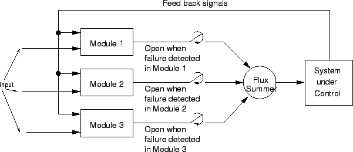
|
แบบจำลองมาร์คอฟมีลักษณะคล้ายกับ แบบจำลองมาร์คอฟของระบบ TMR ซึ่งถ้าค่าความคุ้มครองจากความเสียหายของระบบ มีค่าเท่ากับ 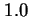 แบบจำลองมาร์คอฟมีลักษณะเหมือนกับ TMR แบบจำลองมาร์คอฟแสดงในรูป
12.6
Figure 12.6:
การเปลี่ยนแปลงสถานะของระบบที่คำนึงถึงผลกระทบจากเฟคเตอร์ความคุ้มครองจากความเสียหาย สถานะประกอบด้วย-ระบบสมบูรณ์, ระบบเสียหนึ่งโมดูล หรือ สองโมดูล, ระบบไม่สามารถตรวจจับความเสียหาย,และระบบล้มเหลว
|
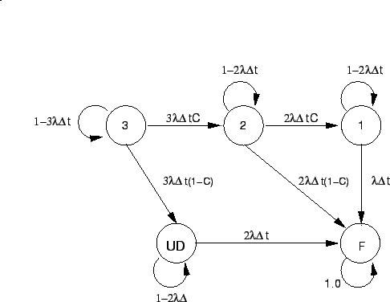
|
สมมุติให้ระบบเริ่มทำงานที่สภาพสมบูรณ์ไม่มีการเสียหายในสถานะ 3 ถ้าเกิดการเสียหายของโมดูลใดโมดูลหนึ่งในสามโมดูล และการเสียหายนั้นได้รับการจัดการอย่างถูกต้อง ระบบจะเปลี่ยนมาอยู่ที่สถานะ 2
จากสถานะ 3 สามารถเปลี่ยนแปลงสถานะเป็นสถานะ UD นั้นคือเกิดความเสียหายในระบบ แต่ไม่สามารถตรวจจับความเสียหาย และจัดการได้อย่างถูกต้อง การเปลี่ยนสถานะในลักษณะเดียวกันเกิดขึ้นในสถานะ 2 และสถานะ 1 จากสถานะ 2 ถ้าเกิดการเสียหายของโมดูลใดโมดูลหนึ่งในสองโมดูล และการเสียหายนั้นได้รับการจัดการอย่างถูกต้องระบบจะเปลี่ยนมาอยู่ที่สถานะ 1 และยังคงทำงานได้ แต่ถ้าไม่สามารถตรวจจับความเสียหาย และจัดการได้อย่างถูกต้อง ระบบจะเปลี่ยนมาอยู่ที่สถานะการทำงานล้มเหลว สถานะ 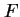 เช่นเดียวกันการเสียหายใดๆ ที่เกิดขึ้นกับระบบในสถานะ 1 ระบบจะเปลี่ยนมาอยู่ที่สถานะ
ณ. สถานะใดๆ จะมีความน่าจะเป็นที่ระบบจะคงสถานะเดิม เช่น เมื่อระบบอยู่ที่สถานะ 3 ระบบจะยังคงอยู่ในสถานะ 3 ถ้าไม่มีการเสียหายของโมดูลเกิดขึ้น ในลักษณะเดียวกัน ระบบจะยังคงอยู่ในสถานะ 2, 1, UD, และ ตามลำดับ ถ้าระะบบอยู่ในสถานะนั้นและไม่มีการเสียหายของโมดูลเกิดขึ้น ความน่าจะเป็นที่ระบบจะคงสถานะเมื่อเวลาผ่านไป 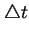 สามารถคำนวณได้จาก
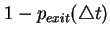 เมื่อ
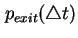 เป็นค่าความน่าจะเป็นที่ระบบจะออกจากสถานะนั้นในช่วง ตัวอย่างเช่น ความน่าจะเป็นที่ระบบจะออกจากสถานะ 3 ในช่วงเวลา คือความน่าจะเป็นที่จะมีจะมีหนึ่งในสามโมดูลเสียหาย ในที่นี้ความน่าจะเป็นที่ระบบจะออกจากสถานะ 3 เท่ากับ
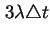 ดังนั้นความน่าจะเป็นที่จะคงสถานะ 3 เท่ากับ
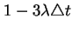
สมการของแบบจำลองมาร์คอฟในรูป 12.5 สามารถหาโดยวิธีการเดียวกับวิธีการ TMR ความน่าจะเป็นที่จะอยู่ที่สถานะ ที่เวลา ขึ้นอยู่กับ (1) ความน่าจะเป็นที่ระบบจะอยู่ที่สถานะ  ที่เวลา
ที่เวลา  และ (2) การเปลี่ยนสถานะของระบบ ตัวอย่างเช่น ระบบจะเปลี่ยนสถานะไปอยู่ในสถานะ 2 ช่วงเวลา ก็ต่อเมื่อระบบอยู่ในสถานะ 2 หรือ 3 ที่เวลา ดังนั้นความน่าจะเป็นที่ระบบอยู่ในสถานะ 2 ที่เวลา
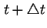 จะเท่ากับ
และ (2) การเปลี่ยนสถานะของระบบ ตัวอย่างเช่น ระบบจะเปลี่ยนสถานะไปอยู่ในสถานะ 2 ช่วงเวลา ก็ต่อเมื่อระบบอยู่ในสถานะ 2 หรือ 3 ที่เวลา ดังนั้นความน่าจะเป็นที่ระบบอยู่ในสถานะ 2 ที่เวลา
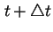 จะเท่ากับ
ซึ่งจากรูป 12.5 จะสามารถเขียนสมการทั้งหมดได้ดังต่อไปนี้
| 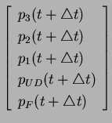 |
 |
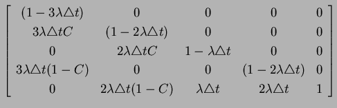 |
|
| |
|
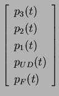 |
(12.36) |
ความน่าเชื่อถือของระบบที่อธิบายโดยแบบจำลองมาร์คอฟในรูป 12.5 คือความน่าจะเป็นของระบบที่จะอยู่ในสถานะ 3, 2, 1, และ UD ซึ่งสามารถเขียนเป็นสมการได้ดังต่อไปนี้
ถ้าเฟคเตอร์ความคุ้มครองความเสียหายของระบบเท่ากับ 1.0 ระบบที่พิจารณาจะมีค่าความน่าเชื่อถือเท่ากับระบบแบบขนานสามโมดูล และถ้าเฟคเตอร์ค่าความคุ้มครองความเสียหายของระบบเท่ากับ 1.0 ระบบที่พิจารณาจะมีค่าความน่าเชื่อถือเท่ากับระบบ TMR
ระบบต่อมาที่จะพิจารณาคือระบบที่มีการซ่อมบำรุงในการฟื้นคืนสภาพการทำงาน ตัวอย่างเช่น บางระบบต้องคำนึงถืง อัตราการซ่อมในการจำลองการทำงาน ระบบที่ใช้เวลาการซ่อมนาน จำเป็นต้องออกแบบให้มีการคงทนต่อการเสียหาย เพื่อให้สามารถทำงานได้ในขณะที่ทำการซ่อมโมดูล
เมื่อพิจารณาแบบจำลองมาร์คอฟที่ประกอบด้วยระบบคอมพิวเตอร์ที่ไม่มีโมดูลสำรอง โดยที่เราต้องการจำลองระบบดังกล่าวเมื่อเกิดการเสียหาย และกระบวนการฟื้นคืนจากสภาพล้มเหลวของระบบคอมพิวเตอร์ โดยให้ระบบมีอัตราการเสียหายคงที่ 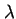 และอัตราการซ่อมบำรุง 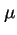 ในช่วงเวลา ระบบจะมีความน่าจะเป็นที่จะเสียเท่ากับ
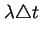 และความน่าจะเป็นที่ระบบจะสามารถซ่อมในช่วงเวลา มีค่าเท่ากับ
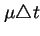 จากข้อมูลดังกล่าวเราสามารถเขียนแผนภาพมาร์คอฟได้ดังรูป 12.7
ระบบคอมพิวเตอร์ในสถานะ 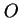 แสดงสถานะของระบบที่ทำงานปกติ และสถานะ เป็นสถานะของระบบที่อยู่ในสภาวะล้มเหลว ถ้าที่เวลา ระบบคอมพิวเตอร์ทำงานอยู่ที่สถานะ ความน่าจะเป็นที่ระบบจะเปลี่ยนเป็นสถานะ ในช่วงเวลา มีค่าเท่ากับ
เช่นเดียวกัน ระบบคอมพิวเตอร์ทำงานอยู่ที่สถานะ ที่เวลา ความน่าจะเป็นที่ระบบจะเปลี่ยนเป็นสถานะ ในช่วงเวลา มีค่าเท่ากับ
และความน่าจะเป็นที่ระบบจะคงสถานะ ในช่วงเวลา มีค่าเท่ากับ
และถ้าระบบอยู่ในสถานะ ที่เวลา ความน่าจะเป็นที่ระบบจะคงสถานะ ในช่วงเวลา มีค่าเท่ากับ
Figure 12.7:
แบบจำลองมาร์คอฟของระบบที่มีการซ่อม
|
|
ชุดของสมการจากแบบจำลองมาร์คอฟในรูป 12.7
จะสามารถเขียนได้เท่ากับ
จากสมการขั้นต้นเราสามารถเขียนอยู่ในสมการ
| 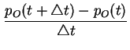 |
|
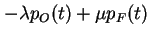 |
|
| 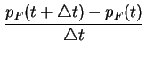 |
|
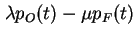 |
(12.39) |
ให้ค่า เข้าใกล้ศูนย์ และจัดรูปสมการเราจะได้
| 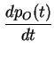 |
|
|
|
| 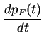 |
|
|
(12.40) |
โดยสมมุติให้ระบบเริ่มทำงานที่สภาพสมบูรณ์ นั้นคือ 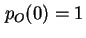 และ 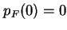 และหาคำตอบโดยการใช้การแปลง Laplace
จัดรูปสมการให้เหมาะสมเป็น
| 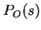 |
|
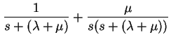 |
|
| 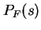 |
|
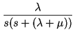 |
(12.42) |
ซึ่งสามารถเขียนได้เป็น
ทำการแปลงกลับ Laplace จะได้
| 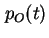 |
|
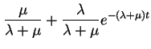 |
|
| 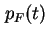 |
|
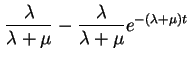 |
(12.44) |
ที่เวลาเป็นอนันต์ เราจะได้ค่าความน่าจะเป็นที่ระบบจะอยู่ในสภาพทำงานได้เท่ากับ
และความน่าจะเป็นที่ระบบจะอยู่ในสถานะ 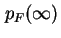 ที่เวลาเป็นอนันต์เท่ากับ
รูป 12.8 แสดงความสัมพันธ์ระหว่างความน่าจะเป็นที่ระบบอยู่ในสถานะ (ทำงานปกติ) เทียบกับอัตราการซ่อม (Repair Rate) โดยที่อัตราการเสียหาย มีค่าเท่ากับ 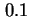 โมดูลต่อชั่วโมง และ ค่า มีค่าเท่ากับ วินาที โดยสมมุติว่าระบบเริ่มทำงานที่สภาพสมบูรณ์
Figure 12.8:
ความสัมพันธ์ระหว่างความน่าจะเป็นที่ระบบอยู่ในสถานะ
(ทำงานปกติ) เทียบกับอัตราการซ่อม (Repair Rate)
|
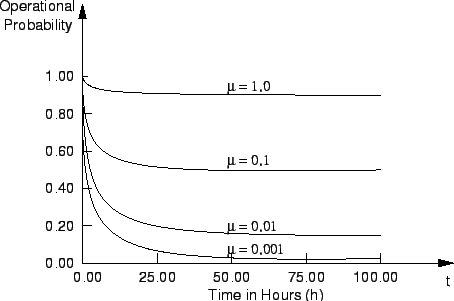
|
Next: แบบจำลองความปลอดภัย
Up: แบบจำลองมาร์คอฟ
Previous: แบบจำลองมาร์คอฟของระบบ TMR
Contents
Index
Vara Varavithya
2002-03-09

![\includegraphics[width=4.in]{fig/repair.eps}](img900.png)